A quantitative investment framework built from 1,957 real passenger reviews — combining exploratory analysis, LLM-powered NLP, predictive modelling, and controlled experimentation to answer one question: which product improvements actually move loyalty?
Every chart and model in this portfolio starts from the same mandate a PDD team genuinely has: identify the product investments that actually move recommendation rate — not as a vanity metric, but as the closest observable proxy for passenger loyalty.
12-chart deep-dive across temporal trends, cabin performance, satisfaction drivers, aircraft analysis, geographic intelligence, and value perception. Built with Pandas, Matplotlib, and Seaborn.
Llama 3.1 8B via Groq API / Ollama replacing VADER and TextBlob. 40+ structured fields per review — sarcasm detection, competitor mentions, rebook intent, and product theme classification across 10 dimensions.
Sentence embeddings (MiniLM-L6-v2) plus K-Means to surface semantically identical complaints as single product failures. "Rude staff" and "dismissive crew" are the same issue — raw frequency tables miss this.
Logistic Regression + Random Forest + XGBoost predicting recommendation intent. SHAP decomposition per passenger. Output: a ranked product investment framework — not just a model score.
Full experimental analysis of an elevated economy meal service trial across 4 routes over 4 months. t-test, Mann-Whitney U, Chi-squared, Shapiro-Wilk, Cohen's d, 95% CI — and a financial business case projection.
Three-page interactive dashboard designed for a product manager audience. Every visual answers a genuine PDD question. All NLP pipeline outputs are Power BI-ready CSVs with custom DAX measures.
Three pages, each answering a question a PDD team actually asks. Filter by cabin class, route, aircraft type, and time period. Every metric is framed as a product implication, not a statistical result.
Traditional keyword approaches (VADER, TextBlob) miss context, irony, and aviation-specific nuance. A Llama 3.1 8B pipeline extracts 40+ structured fields per review — including sarcasm detection and competitor mentions — for sentiment that reflects intent, not just words.
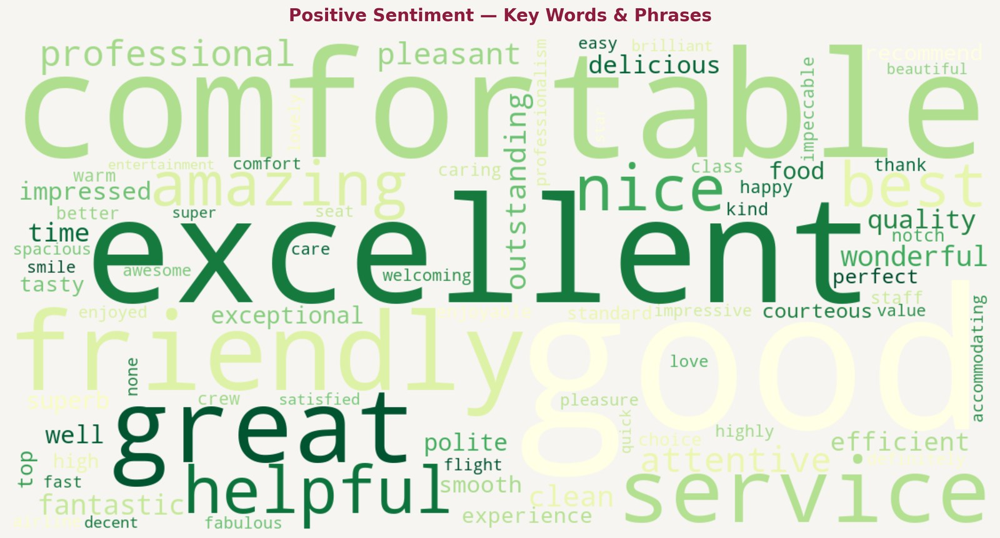
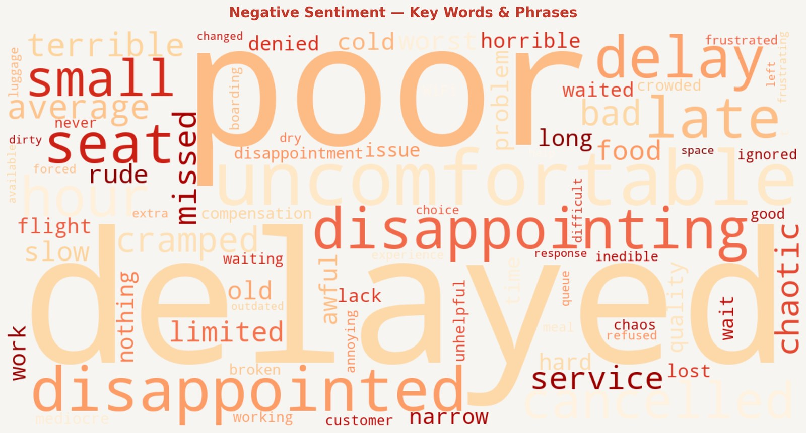
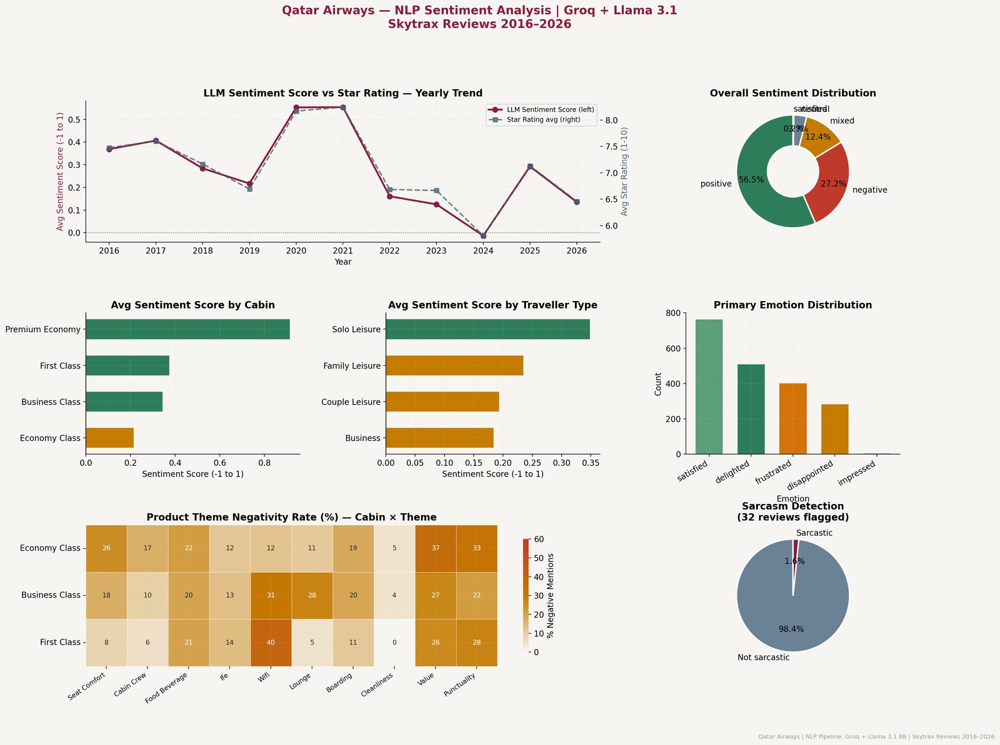
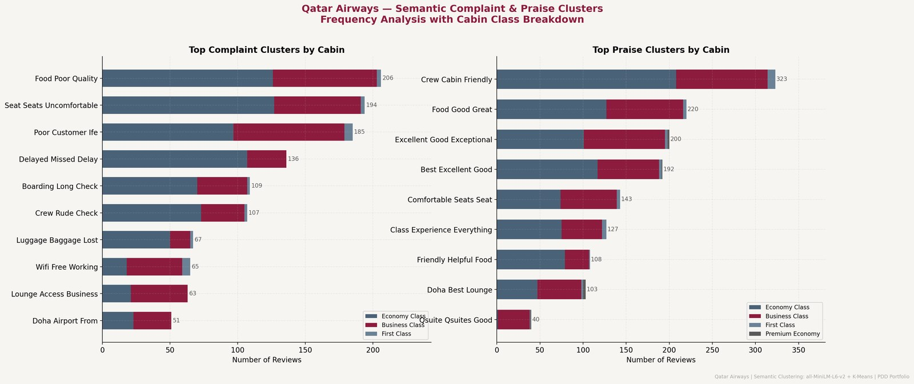
A complete EDA across temporal trends, cabin performance, satisfaction drivers, aircraft analysis, geographic intelligence, and value perception. Every chart answers a product question — not a statistical one.
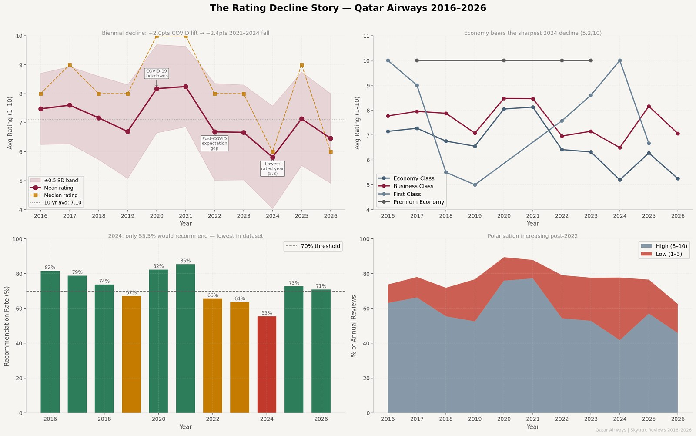
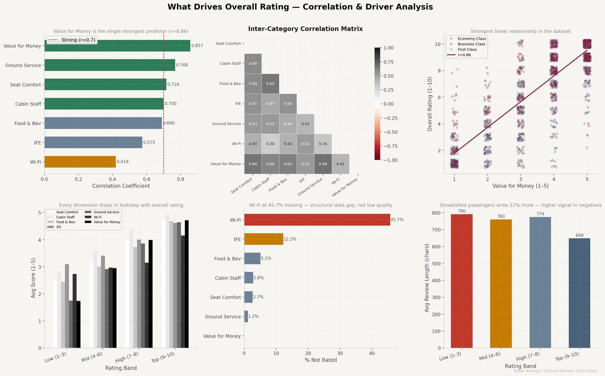
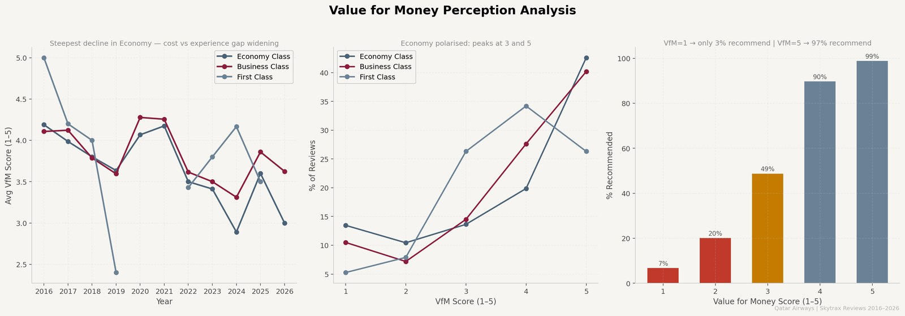
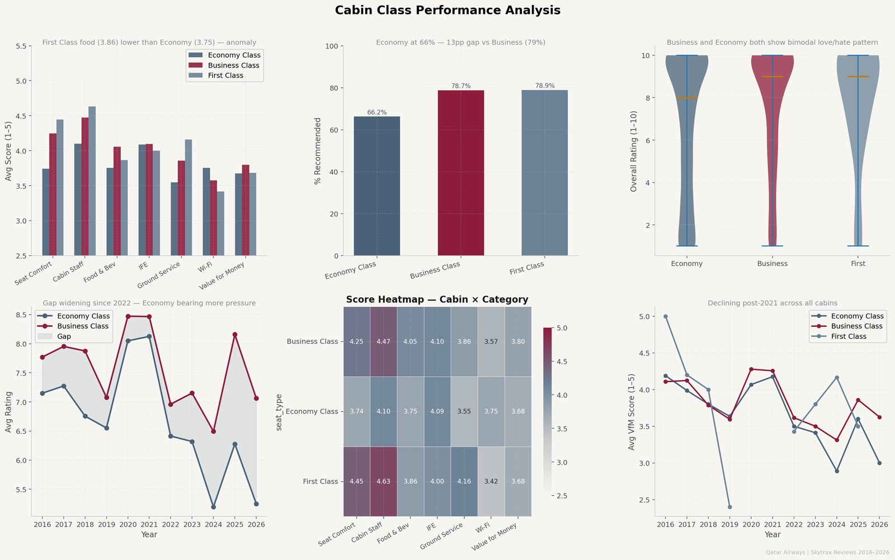
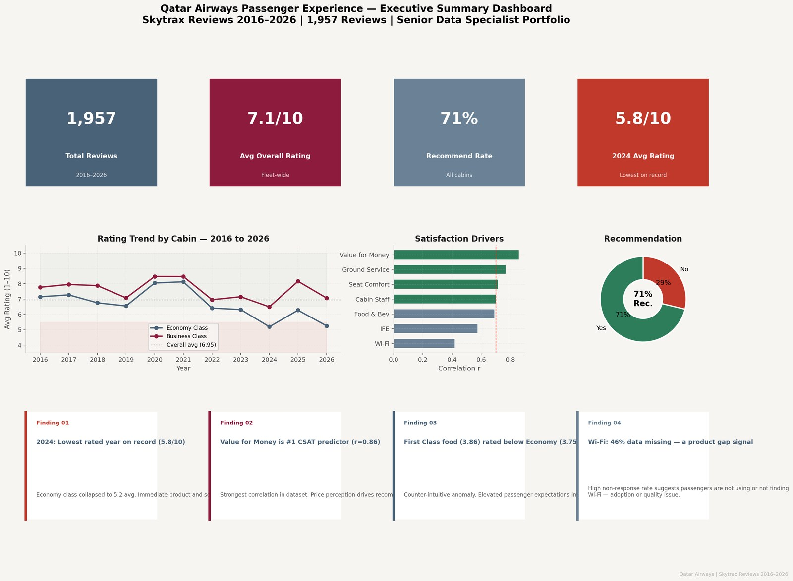
Three models predict recommendation intent (Yes / No) using product scores, NLP sentiment themes, and behavioural signals. The output is not an accuracy score. It is a ranked product investment prioritisation framework — which dimensions drive loyalty, in which direction, by how much.
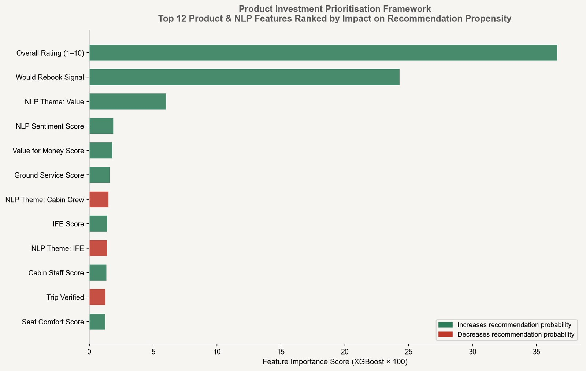
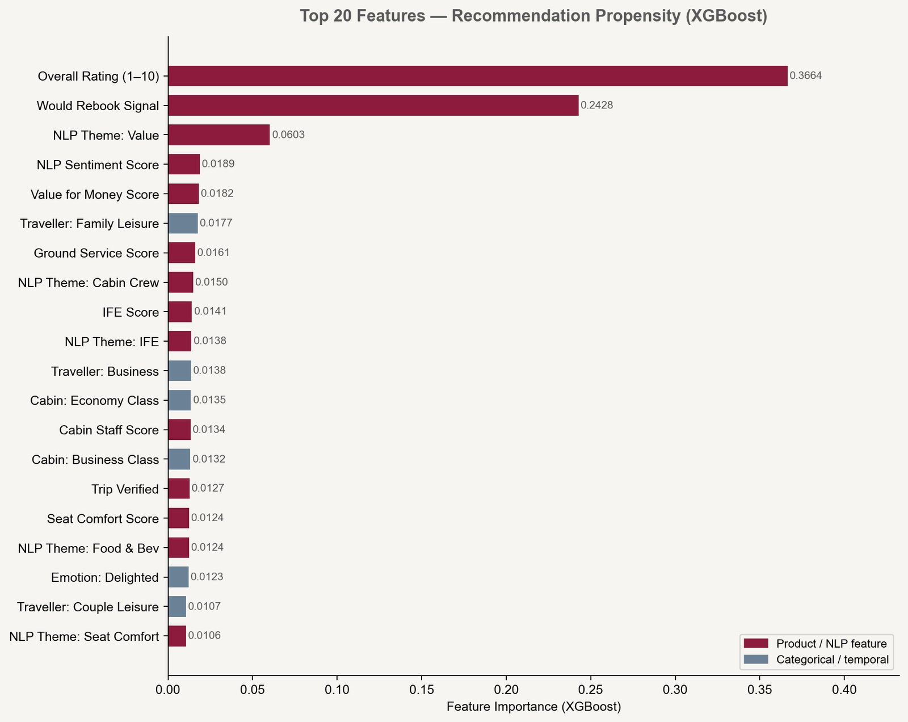
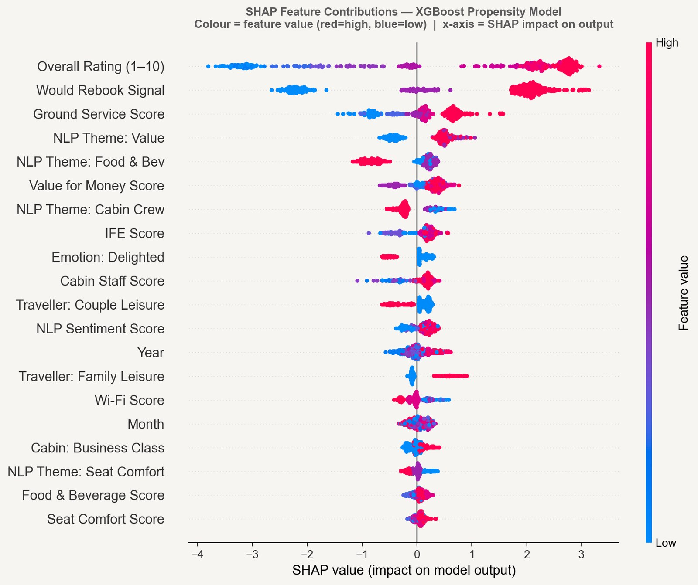
Both the numeric score (rank 5) and NLP free-text theme (rank 3) surface independently in the model. Product investment is insufficient without a value narrative — passengers must be able to perceive the improvement as worth the fare.
Ranks above Food & Beverage, Seat Comfort, and Wi-Fi by XGBoost importance. Airport touchpoints set passenger expectations before boarding; low ground service scores create a negative prior that depresses all subsequent onboard ratings.
IFE scores show a recurring mid-year dip correlated with stale content cycles. Passengers rating IFE ≤2/5 are significantly more likely to be NPS detractors. A quarterly refresh cycle is a low-cost, high-frequency intervention.
The Would Rebook Signal (rank 2 by feature importance) identifies passengers who signal "maybe" — flying out of route necessity, not product loyalty. These are first to switch when a competitor enters. Standard NPS tracking is blind to this segment.
A complete experimental analysis of an elevated economy meal service trial. Full rigour: balance verification, parametric and non-parametric testing, effect size calculation, subgroup analysis by cabin class, and a financial business case at network scale.
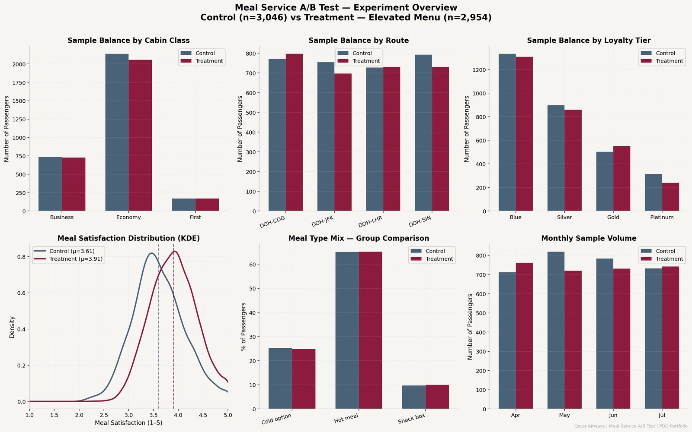
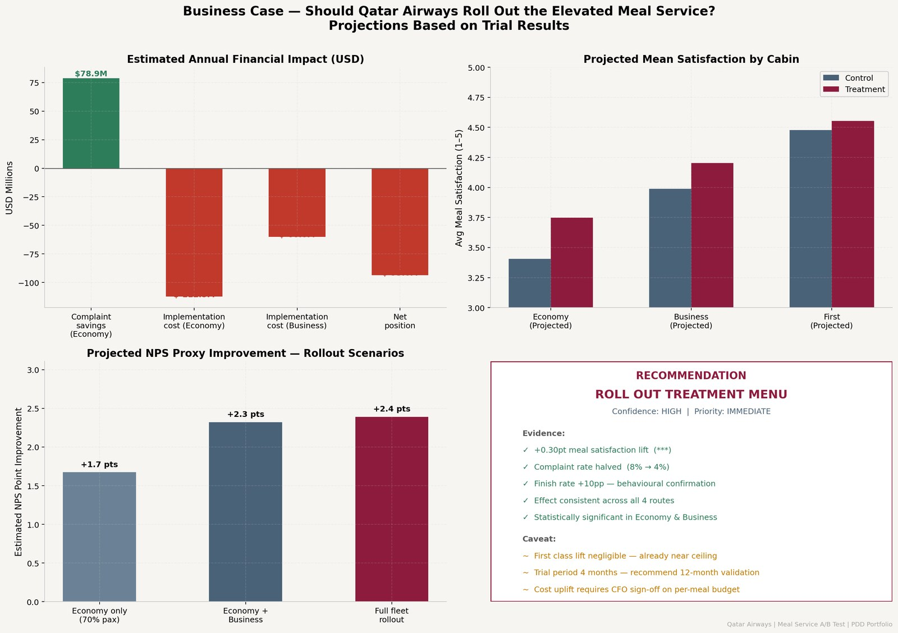
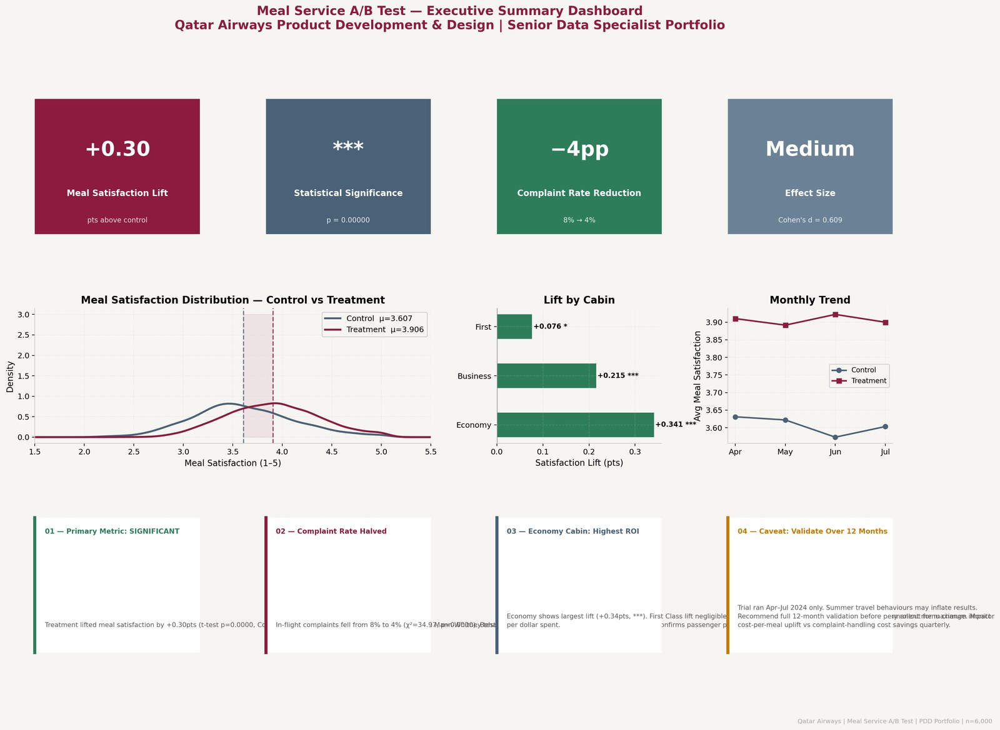